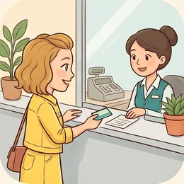

deutschoderwas · Sprechclub · Woche 11 · Strang A · Teil 1 · Montag, 23. November
Bank und Konto: überweisen, abheben, unterschreiben
Ohne Konto geht in Deutschland fast nichts: kein Gehalt, keine Miete, kein Handyvertrag. Und in der Bank fallen Wörter, die man sonst nie hört — Dauerauftrag, Lastschrift, Kontoauszug. Heute sprichst du sie einmal alle laut aus, damit sie beim nächsten Termin nicht mehr fremd sind.
Gleiches Thema, andere Sätze. Wechsle jederzeit — probier ruhig beide Seiten aus.
Erst mal ankommen
Zwei Runden. Erst reihum, dann zu zweit. Ein Satz genügt.

Runde 1 · reihum, ein Satz pro Person
Hast du ein Konto in Deutschland?
Bezahlst du lieber mit Karte oder bar?
Wo hebst du Geld ab?
Was war beim Konto eröffnen am schwierigsten?
Welches Wort aus der Bank verstehst du bis heute nicht?
Wie ist das in deinem Land geregelt?
🔑 Drei Wörter, drei Richtungen:einzahlen — Geld kommt aufs Konto. abheben — Geld kommt vom Konto. überweisen — Geld geht von deinem Konto auf ein anderes.
Runde 2 · zu zweit, fragt euch gegenseitig
Was wird bei dir jeden Monat abgebucht?
Schaust du auf deine Kontoauszüge?
Wie viel kostet dein Konto?
Wann ist ein Dauerauftrag besser als eine Lastschrift?
Was machst du, wenn eine Abbuchung falsch ist?
Woran merkst du, dass ein Konto zu teuer ist?
💡 Gut zu wissen: Eine falsche Lastschrift kannst du acht Wochen lang zurückholen — ein Anruf bei der Bank genügt. Der Satz dafür lautet: Ich möchte diese Lastschrift zurückbuchen lassen.
🆘 Wie fange ich an?
Bei mir war das so: …Ich habe einmal …Ich glaube, das ist …
Bei mir war das so: …Ehrlich gesagt habe ich das noch nie …Mir fällt spontan ein Fall ein, in dem …
Vier Situationen — zwei Runden
1Runde 1: Lest den Dialog zu zweit laut.
2Runde 2: Klappt die Zeilen zu und sprecht frei — nur die Stichwörter bleiben.
Dialog 1 · „Das Konto eröffnen“
A möchte ein Konto eröffnen und war noch nie in einer deutschen Bank. B arbeitet dort und erklärt Schritt für Schritt.
A
Guten Tag, ich möchte gern ein Konto eröffnen.
B
Sehr gern. Haben Sie Ihren Ausweis und die Meldebescheinigung dabei?
🗣️ Die zwei Unterlagen, nach denen immer gefragt wird. Die Meldebescheinigung bekommst du beim Einwohnermeldeamt.tippen = Hilfe zeigen
A
Den Ausweis ja. Die Meldebescheinigung habe ich zu Hause.
B
Kein Problem, schicken Sie sie nach. Wir können heute schon alles ausfüllen.
🗣️ nachschicken — trennbar. Und ausfüllen ebenfalls: Wir füllen alles aus.tippen = Hilfe zeigen
A
Was kostet das Konto denn im Monat?
B
Wenn Ihr Gehalt draufkommt, ist es kostenlos. Sonst fünf Euro Gebühr.
🗣️ Nach den Gebühren immer selbst fragen. Und merk dir: Wenn das Gehalt draufkommt — das ist die häufigste Bedingung.tippen = Hilfe zeigen
Dialog 2 · „Am Automaten“
A steht am Geldautomaten und kommt nicht weiter. B ist eine Passantin und hilft.
A
Entschuldigung, verstehe ich das richtig — hier kostet Abheben Gebühren?
B
Ja, das ist eine fremde Bank. Bei Ihrer eigenen ist es umsonst.
🗣️ umsonst heißt kostenlos. Und die Regel dahinter gilt in ganz Deutschland: eigene Bank gratis, fremde Bank kostet.tippen = Hilfe zeigen
A
Wo finde ich denn meine Bank hier in der Nähe?
B
Zwei Straßen weiter, neben der Apotheke. Da gibt es auch einen Automaten.
🗣️ Eine kurze Wegbeschreibung. Neben der Apotheke — Dativ, weil es um den Ort geht.tippen = Hilfe zeigen
A
Danke! Und wenn ich es trotzdem hier mache, wie viel ist es?
B
Vier oder fünf Euro, glaube ich. Der Automat sagt es Ihnen vorher an.
🗣️ ansagen — trennbar, und hier heißt es: Er zeigt es dir, bevor du bestätigst. Du kannst also noch abbrechen.tippen = Hilfe zeigen
Dialog 3 · „Die falsche Abbuchung“
A hat auf dem Kontoauszug eine Abbuchung entdeckt, die nicht stimmt. B ist die Bank am Telefon.
A
Guten Tag, auf meinem Kontoauszug steht eine Abbuchung, die ich nicht kenne.
B
Das klären wir. Von wann ist sie, und über welchen Betrag?
🗣️ Die zwei Fragen, die immer kommen: Datum und Betrag. Halt beides bereit, bevor du anrufst.tippen = Hilfe zeigen
A
Vom achten November, neunundvierzig Euro. Der Name sagt mir nichts.
B
Dann buchen wir das zurück. Sie haben acht Wochen Zeit dafür, das geht also.
🗣️ zurückbuchen — trennbar. Und die acht Wochen sind ein Recht, kein Entgegenkommen.tippen = Hilfe zeigen
A
Sehr gut. Muss ich dafür etwas unterschreiben?
B
Nein, das mache ich hier. Das Geld ist morgen wieder auf Ihrem Konto.
🗣️ unterschreiben bleibt zusammen — untrennbar. Und der Schlusssatz ist der, den man hören will.tippen = Hilfe zeigen
Dialog 4 · „Die Miete jeden Monat“
A hat eine neue Wohnung und will die Miete nicht jeden Monat von Hand überweisen. B erklärt den Dauerauftrag.
A
Ich vergesse die Miete jeden Monat fast. Gibt es da etwas Automatisches?
B
Ja, einen Dauerauftrag. Sie nennen mir Betrag und Tag, den Rest machen wir.
🗣️ Die einfachste Erklärung des Wortes: Betrag plus Tag, und es läuft von allein.tippen = Hilfe zeigen
A
Achthundert Euro, immer am Dritten. Kann ich das später ändern?
B
Jederzeit, in der App oder hier bei mir. Und löschen können Sie ihn auch.
🗣️ ändern und löschen — genau das ist der Unterschied zur Lastschrift: Beim Dauerauftrag hast du die Hand drauf.tippen = Hilfe zeigen
A
Und wenn die Miete mal steigt?
B
Dann müssen Sie ihn selbst anpassen. Die Bank weiß davon nichts.
🗣️ Der wichtigste Satz des Dialogs. anpassen — trennbar. Und viele vergessen es, dann fehlt plötzlich Geld beim Vermieter.tippen = Hilfe zeigen
🎭 Und jetzt ihr: Spielt Dialog 1 mit euren eigenen Fragen. Regel: Wer die Bank spielt, erklärt einmal absichtlich zu kompliziert — der andere muss nachfragen.
Sätze, die sitzen müssen
Sag jeden einmal laut.
1 · 🎯 Sagen, was du willst
Ich möchte ein Konto eröffnen.
Ich brauche eine neue Karte.
Ich möchte Geld überweisen.
Ich hätte gern eine Beratung.
2 · ❓ Fragen, was du brauchst
Welche Unterlagen brauche ich?
Was kostet das im Monat?
Wie lange dauert das?
Brauche ich einen Termin?
3 · 🙋 Nachfragen
Können Sie das bitte wiederholen?
Was bedeutet das genau?
Können Sie es einfacher sagen?
Wie schreibt man das?
4 · ✅ Bestätigen
Habe ich das richtig verstanden: …?
Also fünf Euro im Monat, richtig?
Und wo unterschreibe ich?
Bekomme ich das schriftlich?
1 · 🎯 Genau sagen, was du willst
Ich würde gern ein Girokonto eröffnen.
Mich würde interessieren, ob es ein Konto ohne Gebühren gibt.
Ich möchte einen Dauerauftrag einrichten.
Ich hätte eine Frage zu einer Abbuchung.
2 · ❓ Nach dem Kleingedruckten fragen
Welche Gebühren fallen an?
Ist das Abheben bei anderen Banken kostenlos?
Gibt es eine Mindestsumme?
Was passiert, wenn das Konto ins Minus geht?
3 · 🙋 Freundlich nachhaken
Da komme ich noch nicht ganz mit.
Können Sie mir den Unterschied erklären?
Und was heißt das für mich konkret?
Habe ich Sie richtig verstanden, dass …?
4 · ✅ Absichern
Bekomme ich das schriftlich?
Fasse ich kurz zusammen: …
Kann ich das jederzeit kündigen?
Ab wann gilt das?
✅ Und jetzt zu zweit: Deckt die Sätze zu. Einer nennt den Schritt, der andere sagt den Satz aus dem Kopf. Danach tauschen.
⏱️ Die 90-Sekunden-Challenge
Neunzig Sekunden über dein Geld im Alltag: Was wird bei dir abgebucht, was überweist du selbst, wo hebst du Geld ab?
Dein Wort
das Konto
1:30
Vier Sätze, dann trägt dich die Zeit:
Konto:Mein Konto habe ich bei … und es kostet …
Abbuchung:Jeden Monat werden bei mir … abgebucht.
Überweisung:Selbst überweise ich eigentlich nur …
Abheben:Bargeld hebe ich ungefähr … mal im Monat ab.
Und wenn du deine eigenen Zahlen nicht weißt: sag genau das. Ich weiß gar nicht, wie viel mein Konto kostet ist ein guter, ehrlicher Satz — und ein guter Grund, morgen nachzuschauen.
⏱️ Spielregel: In jeder Runde müssen ein trennbares und ein untrennbares Verb vorkommen. Wer Ich weise dir das Geld über sagt, fängt noch einmal an.
🎭 Drei Situationen zu zweit
1Einer fragt, einer erklärt.
2Danach tauschen — beim zweiten Mal ohne die Sätze unten.
3Mindestens drei Wörter von heute pro Runde.
1Konto eröffnen
A
war noch nie in einer deutschen Bank und will ein Konto.
B
arbeitet dort und fragt nach den Unterlagen — von denen A eine nicht dabeihat.
Sätze, die dir helfen
Ich möchte ein Konto eröffnenWelche Unterlagen brauche ich?Was kostet das im Monat?Wo muss ich unterschreiben?
Bringen Sie Ausweis und Meldebescheinigung mitWenn Ihr Gehalt draufkommt, ist es kostenlosDen Rest können Sie nachschicken, wir füllen heute schon alles ausDie Karte kommt in etwa einer Woche per Post
🎯 Geschafft, wennA hat gesagt, was A will, nach Unterlagen und Gebühren gefragt und am Ende zusammengefasst. Und mindestens einmal kam ein trennbares Verb richtig vor.
🆘 Und wenn B nein sagt?
Das verstehe ich. Aber …Kann ich bitte fragen: …?Was kann ich jetzt machen?
Das verstehe ich — trotzdem bleibe ich dabei: …Darf ich kurz nachfragen: …?Wer kann das denn entscheiden?
2Die Abbuchung stimmt nicht
A
hat auf dem Kontoauszug etwas gefunden, das nicht sein kann.
B
ist die Bank und braucht Datum und Betrag.
Sätze, die dir helfen
Da ist eine Abbuchung, die ich nicht kenneVom achten November, neunundvierzig EuroKann ich das zurückholen?Muss ich etwas unterschreiben?
Von wann ist sie und über welchen Betrag genau?Sie haben acht Wochen Zeit, das zurückbuchen zu lassenDas mache ich gleich hier, Sie brauchen nichts zu unterschreibenDas Geld ist morgen wieder auf Ihrem Konto
🎯 Geschafft, wennA hatte Datum und Betrag parat und hat das Wort zurückbuchen benutzt. B hat gesagt, was passiert und bis wann.
🆘 Und wenn B nein sagt?
Das verstehe ich. Aber …Kann ich bitte fragen: …?Was kann ich jetzt machen?
Das verstehe ich — trotzdem bleibe ich dabei: …Darf ich kurz nachfragen: …?Wer kann das denn entscheiden?
3Dauerauftrag für die Miete
A
hat eine neue Wohnung und vergisst jeden Monat die Miete.
B
erklärt den Dauerauftrag — und die eine Sache, die man später selbst tun muss.
Sätze, die dir helfen
Ich vergesse die Miete jeden MonatWie richte ich einen Dauerauftrag ein?Kann ich das später ändern?Und wenn die Miete steigt?
Sie nennen mir Betrag und Tag, den Rest macht die BankÄndern und löschen können Sie ihn jederzeit selbstBei einer Mieterhöhung müssen Sie ihn aber selbst anpassenDie Bank erfährt davon nichts, das ist der häufigste Fehler
🎯 Geschafft, wennDer Unterschied zwischen Dauerauftrag und Lastschrift ist gefallen. Und beide wissen jetzt, was bei einer Mieterhöhung passiert.
🆘 Und wenn B nein sagt?
Das verstehe ich. Aber …Kann ich bitte fragen: …?Was kann ich jetzt machen?
Das verstehe ich — trotzdem bleibe ich dabei: …Darf ich kurz nachfragen: …?Wer kann das denn entscheiden?
🎴 Sprechkarten
Zieh eine Karte. Vier Sätze am Stück.
Deine Aufgabe
Tippe auf den Knopf.
Jetzt ihr
Drei kleine Übungen. Jeder kommt dran.
Dein Satz
Tippe auf den Knopf.
1
Satz ziehen und weiterreden
Zieh einen Satz, sag ihn laut — und häng sofort einen zweiten Satz an, der danach kommen würde.
2
Die Kette
Reihum sagt jeder einen Satz von oben. Kein Satz darf zweimal kommen. Wer nicht weiterweiß, sagt Ich weiß gerade keinen mehr — auch das ist ein Satz.
3
Ohne Hilfe
Klappt alles zu und spielt Dialog 1 noch einmal — frei, mit euren eigenen Wörtern.
Zum Schluss
Ein Satz von jedem.
Welchen Satz von heute nimmst du mit — und wo brauchst du ihn?
🆘 Wie fange ich an?
Ich nehme mit: …Ich will den Satz „…“ benutzen.Neu war für mich: …
Ich nehme mit, dass …Den Satz „…“ will ich nächste Woche wirklich benutzen.Neu war für mich, dass …
📮 Deine Hausaufgabe bis Mittwoch
Vier kleine Aufgaben, zusammen etwa 25 Minuten. Am Mittwoch geht es weiter: bezahlen, die Rechnung teilen und sparen.
💡 Warum das hilft: Beim Thema Geld kostet ein Missverständnis wirklich Geld. Wer in der Bank nachfragen kann, statt höflich zu nicken, spart im Jahr schnell sechzig Euro Gebühren — und merkt eine falsche Abbuchung, solange man sie noch zurückholen kann.
0 von 0 Aufgaben geschafft.
So sehen die Sätze aus:
Ich hebe am Automaten fünfzig Euro ab. — Gestern habe ich fünfzig Euro abgehoben.
Ich überweise die Miete. — Ich habe die Miete schon überwiesen.
Ich fülle das Formular aus. — Ich habe das Formular ausgefüllt.
Der Strom wird jeden Monat abgebucht.
Hier unterschreibe ich. — Ich habe schon unterschrieben.
Ein einziger Test genügt: Sprich das Verb laut aus. Wo die Betonung liegt, bleibt die Silbe stehen — und das ge im Perfekt geht immer direkt vor den betonten Teil.
Das sind die Stellen, auf die es in der Mail ankommt:
Betreff:Rückbuchung einer Lastschrift vom 8. November
Sache:Auf meinem Kontoauszug finde ich eine Abbuchung über 49,00 Euro, die ich nicht zuordnen kann.
Wunsch:Ich bitte Sie, diese Lastschrift zurückbuchen zu lassen.
Schluss:Für Rückfragen erreichen Sie mich unter … Vielen Dank vorab.
Und ein Hinweis, der bares Geld wert ist: Schreib immer Datum und Betrag in die erste Zeile. Ohne beides kann die Bank nichts tun — und die acht Wochen laufen weiter.